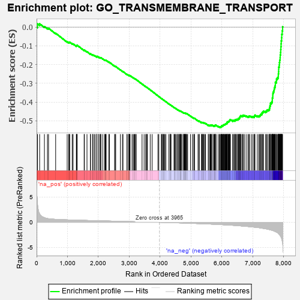
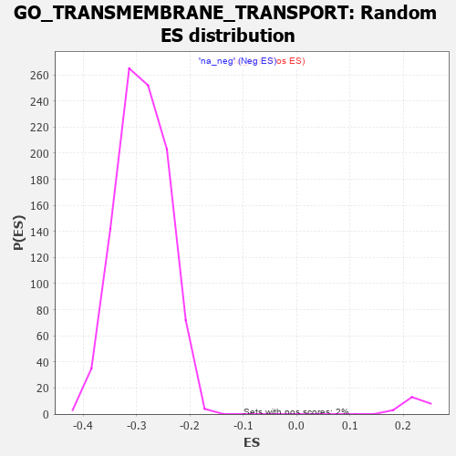

| | | Dataset | 7d |
| Phenotype | NoPhenotypeAvailable |
| Upregulated in class | na_neg |
| GeneSet | GO_TRANSMEMBRANE_TRANSPORT |
| Enrichment Score (ES) | -0.5354037 |
| Normalized Enrichment Score (NES) | -1.8457748 |
| Nominal p-value | 0.0 |
| FDR q-value | 0.010169143 |
| FWER p-Value | 0.218 |
Table: GSEA Results Summary

Fig 1: Enrichment plot: GO_TRANSMEMBRANE_TRANSPORT
Profile of the Running ES Score & Positions of GeneSet Members on the Rank Ordered List
| PROBE | GENE SYMBOL | GENE_TITLE | RANK IN GENE LIST | RANK METRIC SCORE | RUNNING ES | CORE ENRICHMENT | | 1 | ABCA5 | | | 29 | 3.799 | 0.0172 | No |
| 2 | IRS1 | | | 98 | 1.659 | 0.0175 | No |
| 3 | THADA | | | 253 | 0.931 | 0.0027 | No |
| 4 | GSK3A | | | 351 | 0.745 | -0.0058 | No |
| 5 | BAX | | | 387 | 0.711 | -0.0064 | No |
| 6 | KCND2 | | | 617 | 0.590 | -0.0328 | No |
| 7 | COX10 | | | 990 | 0.485 | -0.0784 | No |
| 8 | AKT1 | | | 1040 | 0.476 | -0.0821 | No |
| 9 | MEF2C | | | 1054 | 0.473 | -0.0812 | No |
| 10 | AIFM1 | | | 1072 | 0.469 | -0.0808 | No |
| 11 | PSMD7 | | | 1152 | 0.454 | -0.0885 | No |
| 12 | PSMD2 | | | 1181 | 0.450 | -0.0897 | No |
| 13 | PEX3 | | | 1287 | 0.432 | -0.1009 | No |
| 14 | PARL | | | 1290 | 0.432 | -0.0988 | No |
| 15 | KCNH7 | | | 1305 | 0.427 | -0.0982 | No |
| 16 | PEX5 | | | 1313 | 0.427 | -0.0968 | No |
| 17 | SEC62 | | | 1539 | 0.385 | -0.1238 | No |
| 18 | CSN3 | | | 1548 | 0.383 | -0.1228 | No |
| 19 | ABCB8 | | | 1631 | 0.369 | -0.1314 | No |
| 20 | JPH1 | | | 1741 | 0.347 | -0.1436 | No |
| 21 | SLMAP | | | 1744 | 0.346 | -0.1419 | No |
| 22 | PSMD4 | | | 1811 | 0.335 | -0.1486 | No |
| 23 | FMR1 | | | 1816 | 0.334 | -0.1473 | No |
| 24 | PSMD6 | | | 1858 | 0.326 | -0.1508 | No |
| 25 | GLRA2 | | | 1892 | 0.321 | -0.1533 | No |
| 26 | CUL5 | | | 1947 | 0.314 | -0.1586 | No |
| 27 | MCUR1 | | | 1953 | 0.313 | -0.1575 | No |
| 28 | MICU1 | | | 1954 | 0.313 | -0.1558 | No |
| 29 | RAF1 | | | 2011 | 0.303 | -0.1614 | No |
| 30 | DNLZ | | | 2012 | 0.303 | -0.1597 | No |
| 31 | PEX2 | | | 2056 | 0.298 | -0.1636 | No |
| 32 | KCNC2 | | | 2075 | 0.295 | -0.1644 | No |
| 33 | LRRC7 | | | 2080 | 0.294 | -0.1633 | No |
| 34 | PSME4 | | | 2143 | 0.285 | -0.1697 | No |
| 35 | C2CD5 | | | 2204 | 0.276 | -0.1760 | No |
| 36 | GRIK3 | | | 2224 | 0.272 | -0.1769 | No |
| 37 | COX15 | | | 2238 | 0.270 | -0.1771 | No |
| 38 | PSMF1 | | | 2251 | 0.268 | -0.1772 | No |
| 39 | ANO6 | | | 2339 | 0.255 | -0.1871 | No |
| 40 | COX7C | | | 2356 | 0.252 | -0.1878 | No |
| 41 | SPG7 | | | 2525 | 0.223 | -0.2083 | No |
| 42 | SRP54 | | | 2544 | 0.220 | -0.2094 | No |
| 43 | PSMD5 | | | 2560 | 0.218 | -0.2102 | No |
| 44 | PHB2 | | | 2712 | 0.197 | -0.2286 | No |
| 45 | MAGT1 | | | 2780 | 0.186 | -0.2363 | No |
| 46 | AQP3 | | | 2796 | 0.184 | -0.2372 | No |
| 47 | ERO1A | | | 2925 | 0.162 | -0.2529 | No |
| 48 | CLCN7 | | | 2931 | 0.161 | -0.2527 | No |
| 49 | ANO1 | | | 2982 | 0.152 | -0.2583 | No |
| 50 | ISCU | | | 2989 | 0.151 | -0.2583 | No |
| 51 | PEX1 | | | 2990 | 0.151 | -0.2574 | No |
| 52 | AZIN2 | | | 2993 | 0.150 | -0.2569 | No |
| 53 | COX17 | | | 3019 | 0.147 | -0.2593 | No |
| 54 | SEC63 | | | 3025 | 0.146 | -0.2592 | No |
| 55 | CHP1 | | | 3089 | 0.138 | -0.2666 | No |
| 56 | WWP1 | | | 3127 | 0.133 | -0.2706 | No |
| 57 | RAB4B | | | 3157 | 0.129 | -0.2737 | No |
| 58 | PSMD9 | | | 3179 | 0.125 | -0.2757 | No |
| 59 | KCNN1 | | | 3196 | 0.123 | -0.2771 | No |
| 60 | PEX10 | | | 3227 | 0.117 | -0.2803 | No |
| 61 | KCNK1 | | | 3413 | 0.088 | -0.3038 | No |
| 62 | CDK5 | | | 3480 | 0.080 | -0.3119 | No |
| 63 | ABCB7 | | | 3530 | 0.071 | -0.3179 | No |
| 64 | SURF1 | | | 3558 | 0.066 | -0.3210 | No |
| 65 | DERL1 | | | 3570 | 0.065 | -0.3221 | No |
| 66 | CHERP | | | 3587 | 0.062 | -0.3238 | No |
| 67 | ABCD1 | | | 3677 | 0.047 | -0.3351 | No |
| 68 | COX5A | | | 3738 | 0.036 | -0.3427 | No |
| 69 | ABCA9 | | | 3927 | 0.005 | -0.3670 | No |
| 70 | GLRA1 | | | 3957 | 0.001 | -0.3708 | No |
| 71 | CLIC6 | | | 4037 | -0.014 | -0.3809 | No |
| 72 | ATG5 | | | 4051 | -0.016 | -0.3825 | No |
| 73 | KCNT2 | | | 4081 | -0.021 | -0.3862 | No |
| 74 | PDE4B | | | 4089 | -0.022 | -0.3870 | No |
| 75 | MTOR | | | 4114 | -0.025 | -0.3899 | No |
| 76 | ABL1 | | | 4125 | -0.027 | -0.3911 | No |
| 77 | WNK3 | | | 4153 | -0.034 | -0.3944 | No |
| 78 | UNC79 | | | 4184 | -0.039 | -0.3981 | No |
| 79 | PSME3 | | | 4280 | -0.056 | -0.4101 | No |
| 80 | ROMO1 | | | 4320 | -0.063 | -0.4148 | No |
| 81 | STAC | | | 4327 | -0.064 | -0.4152 | No |
| 82 | OPA1 | | | 4330 | -0.065 | -0.4151 | No |
| 83 | ADRB2 | | | 4352 | -0.068 | -0.4175 | No |
| 84 | TMCO1 | | | 4451 | -0.085 | -0.4297 | No |
| 85 | KCNQ4 | | | 4452 | -0.085 | -0.4292 | No |
| 86 | JPH3 | | | 4481 | -0.091 | -0.4323 | No |
| 87 | MEF2A | | | 4499 | -0.095 | -0.4340 | No |
| 88 | RTN2 | | | 4537 | -0.102 | -0.4383 | No |
| 89 | MICU3 | | | 4571 | -0.110 | -0.4419 | No |
| 90 | MPV17 | | | 4575 | -0.112 | -0.4417 | No |
| 91 | MFSD9 | | | 4602 | -0.118 | -0.4444 | No |
| 92 | OSTM1 | | | 4632 | -0.125 | -0.4475 | No |
| 93 | LETM1 | | | 4644 | -0.127 | -0.4482 | No |
| 94 | NMUR2 | | | 4646 | -0.127 | -0.4476 | No |
| 95 | ITPR1 | | | 4661 | -0.130 | -0.4487 | No |
| 96 | CLCN3 | | | 4678 | -0.134 | -0.4501 | No |
| 97 | CRBN | | | 4695 | -0.138 | -0.4514 | No |
| 98 | CNNM4 | | | 4738 | -0.147 | -0.4560 | No |
| 99 | LASP1 | | | 4767 | -0.151 | -0.4588 | No |
| 100 | PLCG1 | | | 4770 | -0.151 | -0.4582 | No |
| 101 | PIM1 | | | 4776 | -0.152 | -0.4581 | No |
| 102 | MYO5A | | | 4787 | -0.155 | -0.4585 | No |
| 103 | TERT | | | 4801 | -0.157 | -0.4593 | No |
| 104 | P2RX4 | | | 4813 | -0.161 | -0.4599 | No |
| 105 | WDR1 | | | 4824 | -0.163 | -0.4603 | No |
| 106 | ABCD3 | | | 4829 | -0.164 | -0.4599 | No |
| 107 | SGK1 | | | 4852 | -0.168 | -0.4618 | No |
| 108 | DLG1 | | | 4860 | -0.169 | -0.4618 | No |
| 109 | CLU | | | 4889 | -0.174 | -0.4644 | No |
| 110 | COX5B | | | 4980 | -0.194 | -0.4750 | No |
| 111 | PDPK1 | | | 5043 | -0.207 | -0.4819 | No |
| 112 | DRD2 | | | 5088 | -0.221 | -0.4864 | No |
| 113 | BEST3 | | | 5106 | -0.227 | -0.4874 | No |
| 114 | MMP9 | | | 5108 | -0.227 | -0.4862 | No |
| 115 | CLCN2 | | | 5224 | -0.250 | -0.4998 | No |
| 116 | SCN1A | | | 5260 | -0.261 | -0.5029 | No |
| 117 | PTEN | | | 5262 | -0.261 | -0.5015 | No |
| 118 | SGK3 | | | 5338 | -0.282 | -0.5097 | No |
| 119 | TMC5 | | | 5339 | -0.283 | -0.5082 | No |
| 120 | ITPR3 | | | 5361 | -0.288 | -0.5093 | No |
| 121 | GRIN1 | | | 5381 | -0.291 | -0.5101 | No |
| 122 | DLG4 | | | 5388 | -0.293 | -0.5093 | No |
| 123 | KCNC4 | | | 5414 | -0.298 | -0.5109 | No |
| 124 | NIPA2 | | | 5441 | -0.305 | -0.5126 | No |
| 125 | CPT1A | | | 5467 | -0.311 | -0.5141 | No |
| 126 | ABCG2 | | | 5556 | -0.335 | -0.5237 | No |
| 127 | FOLR2 | | | 5563 | -0.336 | -0.5226 | No |
| 128 | MPC1 | | | 5603 | -0.345 | -0.5258 | No |
| 129 | CPT2 | | | 5611 | -0.348 | -0.5247 | No |
| 130 | TMC7 | | | 5622 | -0.351 | -0.5241 | No |
| 131 | G6PD | | | 5638 | -0.358 | -0.5241 | No |
| 132 | WNK1 | | | 5650 | -0.362 | -0.5235 | No |
| 133 | PSMD1 | | | 5674 | -0.367 | -0.5245 | No |
| 134 | CD63 | | | 5680 | -0.370 | -0.5231 | No |
| 135 | CALCR | | | 5730 | -0.386 | -0.5273 | No |
| 136 | ANO8 | | | 5734 | -0.387 | -0.5255 | No |
| 137 | PRAF2 | | | 5760 | -0.395 | -0.5266 | No |
| 138 | GLRB | | | 5776 | -0.398 | -0.5264 | No |
| 139 | ABCG1 | | | 5778 | -0.399 | -0.5243 | No |
| 140 | TRPC6 | | | 5784 | -0.401 | -0.5227 | No |
| 141 | BEST2 | | | 5811 | -0.408 | -0.5238 | No |
| 142 | ASIC4 | | | 5876 | -0.427 | -0.5298 | No |
| 143 | KCNQ1 | | | 5918 | -0.441 | -0.5327 | No |
| 144 | CNGA1 | | | 5931 | -0.445 | -0.5318 | No |
| 145 | ACTN2 | | | 5960 | -0.458 | -0.5329 | Yes |
| 146 | SPNS1 | | | 5973 | -0.461 | -0.5319 | Yes |
| 147 | STAC2 | | | 5987 | -0.466 | -0.5310 | Yes |
| 148 | KCNH6 | | | 5988 | -0.467 | -0.5284 | Yes |
| 149 | SFXN3 | | | 5989 | -0.467 | -0.5259 | Yes |
| 150 | NETO2 | | | 6009 | -0.475 | -0.5257 | Yes |
| 151 | HVCN1 | | | 6034 | -0.482 | -0.5262 | Yes |
| 152 | TRPC3 | | | 6035 | -0.483 | -0.5235 | Yes |
| 153 | ADD2 | | | 6046 | -0.487 | -0.5221 | Yes |
| 154 | ANO4 | | | 6061 | -0.494 | -0.5212 | Yes |
| 155 | SFXN1 | | | 6073 | -0.497 | -0.5199 | Yes |
| 156 | UBB | | | 6090 | -0.503 | -0.5192 | Yes |
| 157 | ABCB6 | | | 6106 | -0.507 | -0.5183 | Yes |
| 158 | PEX12 | | | 6115 | -0.510 | -0.5166 | Yes |
| 159 | DLG2 | | | 6126 | -0.513 | -0.5150 | Yes |
| 160 | SCN9A | | | 6146 | -0.518 | -0.5146 | Yes |
| 161 | KCNQ5 | | | 6161 | -0.524 | -0.5136 | Yes |
| 162 | GOPC | | | 6167 | -0.528 | -0.5113 | Yes |
| 163 | STIM1 | | | 6169 | -0.528 | -0.5085 | Yes |
| 164 | GRID2 | | | 6170 | -0.528 | -0.5056 | Yes |
| 165 | ATP7B | | | 6194 | -0.535 | -0.5056 | Yes |
| 166 | INSR | | | 6204 | -0.538 | -0.5038 | Yes |
| 167 | KCNH8 | | | 6225 | -0.545 | -0.5034 | Yes |
| 168 | RGN | | | 6233 | -0.547 | -0.5013 | Yes |
| 169 | VDAC2 | | | 6242 | -0.553 | -0.4993 | Yes |
| 170 | XPR1 | | | 6250 | -0.555 | -0.4972 | Yes |
| 171 | PEX13 | | | 6255 | -0.557 | -0.4946 | Yes |
| 172 | STK39 | | | 6274 | -0.563 | -0.4938 | Yes |
| 173 | ABCD4 | | | 6349 | -0.597 | -0.5001 | Yes |
| 174 | GALR2 | | | 6355 | -0.599 | -0.4975 | Yes |
| 175 | TRPM4 | | | 6390 | -0.612 | -0.4985 | Yes |
| 176 | MFSD1 | | | 6421 | -0.629 | -0.4989 | Yes |
| 177 | MFSD3 | | | 6424 | -0.630 | -0.4957 | Yes |
| 178 | ABCA2 | | | 6433 | -0.634 | -0.4933 | Yes |
| 179 | GLRA3 | | | 6469 | -0.648 | -0.4942 | Yes |
| 180 | DYSF | | | 6481 | -0.654 | -0.4921 | Yes |
| 181 | TRPV4 | | | 6515 | -0.668 | -0.4927 | Yes |
| 182 | VAMP2 | | | 6525 | -0.672 | -0.4901 | Yes |
| 183 | REM1 | | | 6530 | -0.676 | -0.4869 | Yes |
| 184 | OTOP1 | | | 6562 | -0.690 | -0.4871 | Yes |
| 185 | PEX19 | | | 6569 | -0.693 | -0.4841 | Yes |
| 186 | P2RX5 | | | 6576 | -0.699 | -0.4810 | Yes |
| 187 | ARF1 | | | 6583 | -0.701 | -0.4779 | Yes |
| 188 | OSCP1 | | | 6594 | -0.707 | -0.4753 | Yes |
| 189 | PEX6 | | | 6605 | -0.713 | -0.4727 | Yes |
| 190 | ACSL5 | | | 6643 | -0.737 | -0.4734 | Yes |
| 191 | DPP6 | | | 6676 | -0.751 | -0.4734 | Yes |
| 192 | MPC2 | | | 6683 | -0.753 | -0.4700 | Yes |
| 193 | UNC80 | | | 6724 | -0.770 | -0.4710 | Yes |
| 194 | TRPM8 | | | 6781 | -0.800 | -0.4738 | Yes |
| 195 | SVOP | | | 6840 | -0.837 | -0.4767 | Yes |
| 196 | ABCA4 | | | 6872 | -0.851 | -0.4761 | Yes |
| 197 | HCN1 | | | 6895 | -0.865 | -0.4741 | Yes |
| 198 | SCN4A | | | 6955 | -0.910 | -0.4768 | Yes |
| 199 | CCR2 | | | 7003 | -0.939 | -0.4777 | Yes |
| 200 | CTNS | | | 7044 | -0.965 | -0.4776 | Yes |
| 201 | GRM5 | | | 7053 | -0.969 | -0.4732 | Yes |
| 202 | MFSD8 | | | 7067 | -0.977 | -0.4695 | Yes |
| 203 | CFTR | | | 7143 | -1.030 | -0.4736 | Yes |
| 204 | BEST4 | | | 7192 | -1.065 | -0.4739 | Yes |
| 205 | CNGB1 | | | 7222 | -1.096 | -0.4717 | Yes |
| 206 | ABCA1 | | | 7243 | -1.113 | -0.4681 | Yes |
| 207 | HCN4 | | | 7260 | -1.134 | -0.4639 | Yes |
| 208 | ASIC5 | | | 7293 | -1.160 | -0.4617 | Yes |
| 209 | ANK2 | | | 7298 | -1.170 | -0.4558 | Yes |
| 210 | TRPM1 | | | 7324 | -1.197 | -0.4524 | Yes |
| 211 | GPD1L | | | 7343 | -1.215 | -0.4480 | Yes |
| 212 | UBC | | | 7410 | -1.274 | -0.4496 | Yes |
| 213 | KCNB1 | | | 7444 | -1.327 | -0.4465 | Yes |
| 214 | CNGA3 | | | 7463 | -1.353 | -0.4414 | Yes |
| 215 | VDAC1 | | | 7512 | -1.409 | -0.4399 | Yes |
| 216 | GRIK1 | | | 7538 | -1.454 | -0.4351 | Yes |
| 217 | TRPM3 | | | 7544 | -1.461 | -0.4277 | Yes |
| 218 | GRIK2 | | | 7552 | -1.471 | -0.4205 | Yes |
| 219 | CALM1 | | | 7567 | -1.499 | -0.4140 | Yes |
| 220 | TRPV6 | | | 7569 | -1.502 | -0.4059 | Yes |
| 221 | BEST1 | | | 7601 | -1.554 | -0.4013 | Yes |
| 222 | TRPA1 | | | 7625 | -1.608 | -0.3955 | Yes |
| 223 | PKD1 | | | 7628 | -1.611 | -0.3868 | Yes |
| 224 | KCNN2 | | | 7629 | -1.611 | -0.3779 | Yes |
| 225 | MCU | | | 7644 | -1.637 | -0.3707 | Yes |
| 226 | TRPM6 | | | 7645 | -1.637 | -0.3617 | Yes |
| 227 | GRIA3 | | | 7648 | -1.642 | -0.3529 | Yes |
| 228 | HCN2 | | | 7662 | -1.668 | -0.3454 | Yes |
| 229 | TRPM2 | | | 7680 | -1.712 | -0.3382 | Yes |
| 230 | ANK3 | | | 7690 | -1.740 | -0.3298 | Yes |
| 231 | RHAG | | | 7701 | -1.769 | -0.3213 | Yes |
| 232 | SVOPL | | | 7717 | -1.818 | -0.3132 | Yes |
| 233 | ASIC1 | | | 7726 | -1.838 | -0.3041 | Yes |
| 234 | ANO7 | | | 7727 | -1.838 | -0.2940 | Yes |
| 235 | TRPM7 | | | 7761 | -1.936 | -0.2876 | Yes |
| 236 | PDE4D | | | 7764 | -1.944 | -0.2772 | Yes |
| 237 | GRIK5 | | | 7792 | -2.044 | -0.2694 | Yes |
| 238 | PKD2 | | | 7822 | -2.167 | -0.2612 | Yes |
| 239 | CLCA1 | | | 7824 | -2.171 | -0.2494 | Yes |
| 240 | GRIK4 | | | 7832 | -2.234 | -0.2380 | Yes |
| 241 | KCNC1 | | | 7835 | -2.249 | -0.2258 | Yes |
| 242 | GRIA1 | | | 7836 | -2.260 | -0.2134 | Yes |
| 243 | TCAF2 | | | 7854 | -2.428 | -0.2022 | Yes |
| 244 | GRID1 | | | 7858 | -2.465 | -0.1890 | Yes |
| 245 | CALM3 | | | 7869 | -2.525 | -0.1764 | Yes |
| 246 | FYN | | | 7881 | -2.622 | -0.1633 | Yes |
| 247 | GRIA2 | | | 7885 | -2.684 | -0.1489 | Yes |
| 248 | CAV3 | | | 7896 | -2.739 | -0.1351 | Yes |
| 249 | TCAF1 | | | 7901 | -2.803 | -0.1202 | Yes |
| 250 | PSMD3 | | | 7907 | -2.887 | -0.1049 | Yes |
| 251 | NPSR1 | | | 7913 | -2.947 | -0.0893 | Yes |
| 252 | ASIC2 | | | 7917 | -2.995 | -0.0732 | Yes |
| 253 | PSMD8 | | | 7931 | -3.286 | -0.0568 | Yes |
| 254 | ABCF1 | | | 7934 | -3.354 | -0.0385 | Yes |
| 255 | DAPK1 | | | 7950 | -3.767 | -0.0197 | Yes |
| 256 | GRIA4 | | | 7961 | -4.049 | 0.0013 | Yes |
Table: GSEA details [plain text format]

Fig 2: GO_TRANSMEMBRANE_TRANSPORT: Random ES distribution
Gene set null distribution of ES for GO_TRANSMEMBRANE_TRANSPORT